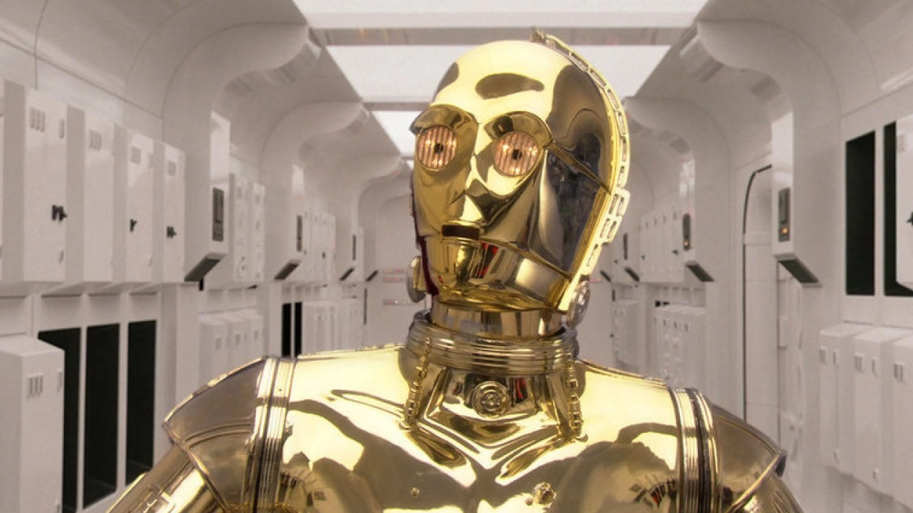

In my last blog post Installing the MBROLA speech synthesiser, I suggested some steps to install the MBROLA speech synthesiser in Ubuntu and Windows Subsystem for Linux (WSL), together with its available voices. I’ll explain how to use pymbrola, a Python module that provides a programmatic interface to MBROLA.
pymbrola provides certain benefits, compared to calling MBROLA from the terminal. First, while some Python users are familiar with bash (the programming language used to interact with the Linux kernel), many other users are not. Getting MBROLA to work using the terminal can take a while, especially if one wants to fine-tune some parameters like phoneme duration or pitch contours. If one needs to generate many audios, calling MBROLA commands for each one of the audios is quite inefficient, but its alternative—calling MBROLA using for loops—requires some bash programming abilities that some may not have the time to acquire.
I made pymbrola with the intention of providing an intermediate point, in which the Python user can call MBROLA commands from the Python console. This way, manipulating parameters or using for loops can be done within Python. Here, I will illustrate some use cases for pymbrola.
Installing pymbrola
The module pymbrola can be installed from PyPi under the name mbrola:
pip install mbrola
Warning
Remember, I assume that you are using Ubuntu (other Linux distros may be compatible as well, but I have not tested them) or Windows Subsystem for Linux (WSL), and have installed MBROLA in your system (see my previous blog post). In case you know your way around Docker, I made a Docker image for convenience.
Phonological symbols
Let’s say we want to synthesise the Italian word caffè using the it4 Italian voice. Our first task is to transcribe the phonological form of the word into a phonological transcript that MBROLA can understand. Each MBROLA voice comes with an associated README file that descibes the voice it self, and also provides the symbols the authors used to transcribe the pre-recorded diphones. This way, using those symbols will result in the appriate diphone being retrieved. Taking a look at the it4 voice README file:
i spinoso s p i n o1 s o
e veloce v e l o1 tS e
E belpaese b E l p a e1 z e
a vaiolo v a j O1 l o
o polsino p o l s i1 n o
O norditalia n O r d i t a1 l i a
u puntale p u n t a1 l e
i1 così k o s i1
e1 mercé m e r tS e1
E1 caffè k a f f E1
a1 bontà b o n t a1
o1 Roma r o1 m a
O1 però p e r O1
u1 più p j u1
j piume p j u1 m e
w quando k w a1 n d o
p pera p e1 r a
t torre t o1 r r e
k caldo k a1 l d o
b botte b o1 t t e
d dente d E1 n t e
g gatto g a1 t t o
f faro f a1 r o
s sole s o1 l e
S sci S i1
v via v i1 a
z peso p e1 s o
Z garage g a r a1 Z
ts pizza p i1 ts ts a
tS pece p e1 tS e
dz zero dz E1 r o
dZ magia m a dZ i1 a
m mano m a1 n o
n nave n a1 v e
J legna l e1 J J a
nf anfora a1 nf f o r a
ng ingordo i ng g o1 r d o
l palo p a1 l o
L soglia s O1 L L a
r remo r E1 m o
_ PAUSEThe authors note that this set of symbols is aligned with the SAMPA transcription system, which makes it a bit more predictable. They also provide some nice example to illustrate the phoneme that eah symbol refers to. Now we know we transcibe our word caffè as k a f f E11. Let’s now implement this transciption using pymbrola.
1 This particular word is one of the examples provided by the authors, which is reassuring
MBROLA class
The main feature of the pymbrola module is the MBROLA class, which we can call specifying the word label (caffè), the list of phonmees to be played (k a f f E1).
import mbrola
# Create an MBROLA object
caffe = mbrola.MBROLA(
word="caffè",
phon=["k", "a", "f", "f", "E1"],
)
# Display phoneme sequence
print(caffe)This is what we get when printing the MBROLA object:
MBROLA object for word 'caffè':
; caffè
_ 1
k 100 200 200
a 100 200 200
f 100 200 200
f 100 200 200
E1 100 200 200
_ 1This is a printed representation of the PHO file (.pho) which MBROLA will use to synthesise the word under the hood. Normally, one would manually write such a file, but pymbrola generates it automatically using the arguments passed to the instance of MBROLA. We can export this PHO file using the export_pho() method:
# Export PHO file
house.export_pho("caffe.pho")Inspecting this file, we can see that line comments are specified with the ; character2. pymbrola prints the word label in this first line, as a comment—it’s easier to read the word label than figuring it out from the phonological symbols that follow.
2 Weird choice if you ask me. Luckily for you, you did not, in fact, ask me so I won’t say anything.
3 I reached this conclusion after unsuccessfully trying to synthesise words in different languages without such silences.
In the next few lines, we define the actual sounds that MBROLA will synthesise, specified sequentially in different rows. We first have a pause symbol (_). This symbol is universal for all MBROLA languages. MBROLA needs a silence before and after the other symbols3. The first character after each symbol corresponds to the duration of its associated sound in milliseconds. We are specifying the duration of this onset silence as a default value of 1 millisecond, which is imperceptible by the human ear, making it equivalent to almost no silence at onset. Same goes for the offset silence at the end of the document.
In the middle, we have several symbols corresponding to the phonemes that make up the word caffè in Italian: k, a, f, f, E1. Again, after each symbol we specify its duration. Since we did not specify otherwise, the duration of each phoneme is assigned 100 milliseconds by default. In next examples we will adjust this parameter at will. The two numbers that follow indicate the pitch contour inside the phoneme—how the pitch increases and decreases within each sound. Again, we are leaving the default options: the pitch starts and ends at 200 Hz with no changes in the middle.
Synthesising a sound
The resulting MBROLA object we created is all MBROLA needs to synthesise the sounds we want. Let’s do it:
# Synthesize and save audio (WAV file)
caffe.make_sound("caffe.wav", voice="it4")As expected, it sounds quite robotic. But the reason we are interested in using MBROLA is not so much how it sounds (more recent tools produce much more natural results), but the fact that we can manipulate quite flexibly the features of each phoneme. pymbrola makes this quite convenient.
Manipulating duration
We can shorten or lengthen the whole audio by a constant (all sounds are modified equally) using the dur_ratio argument in the make_sound() method. A value of 1.0 leaves the audio unnmodified. Smaller values shorten the audio duration:
# cut audio duration by half
caffe.make_sound("caffe-short.wav", voice="it4", dur_ratio=0.5)Meanwhile, larger values lengthen the audio duration:
# souble audio duration
caffe.make_sound("caffe-long.wav", voice="it4", dur_ratio=2.0)To manipulate the individual duration of each phoneme, we need to specify it when create the MBROLA instance. We can do this by specifying a single positive integer in the durations argument, or a list of positive integer with same length as number of phonemes. The former option leads to all phonemes being given that same value. The latter, a list, assigns each duration to each phoneme:
caffe = MBROLA(
word="caffè",
phon=["k", "a", "f", "f", "E1"],
durations=[50, 200, 100, 100, 200] # or [100, 120, 100, 110]
)Let’s inspect the PHO output:
MBROLA object for word 'caffè':
; caffè
_ 1
k 50 200 200
a 200 200 200
f 100 200 200
f 100 200 200
E1 200 200 200
_ 1As you see, we have lengthened the two vowels a and E1, shortened the onset phoneme k and left the rest of the phonemes f and f equal4. Let’s see how it sounds, can you spot the difference?
4 While we can lengthen or shorten phonemes at will, one should keep in ming that some phonemes, because of their articulatory/phonetic properties, are by nature shorter or longer when produced by a human speaker. In fact speaking about duration virtually only useful when talking about phonemes with high sonority (e.g., vowels, liquids). For instance, lengthening stop-consonants like /k/ and /p/ can lead to weird-sounding outputs. Try to produce a long /k/. Does it feel/sound natural? Make sure the durations you specify are informed by natural patters or by the hypotheses of your study!
Manipulating pitch
We also have several methods to alter the pitch contour of the word-form. As we did before with duration, we can also modify the pitch of the whole word by a constant. Let’s raise the pitch to 400 Hz (double):
caffe.make_sound("caffe-high-pitch.wav", voice="it4", f0_ratio=2.0)Now lets lower it to 100 Hz (half):
caffe.make_sound("caffe-high-low.wav", voice="it4", f0_ratio=0.5)More interestingly, we can also modify the pitch contout of each phoneme. As we did with duration, we can do it in two ways. First, we can provide a single positive integer in the pitch argument, which will be assigned to all phonemes:
caffe = mbrola.MBROLA(
word="caffè",
phon=["k", "a", "f", "f", "E1"],
pitch=300
)We can also pass a list of pitch values in a list of length equal to the number of phonemes:
caffe = mbrola.MBROLA(
word="caffè",
phon=["k", "a", "f", "f", "E1"],
pitch=[250, 250, 200, 200, 200]
)Here we have passed a list of pitch values (in Hz) that make the first syllable have a higher pitch, compared to the second one. Can you hear the difference?
Finally, we can also pass a list of embedded lists, each of these would specify the pitch contour within each phoneme. For instance:
caffe = mbrola.MBROLA(
word="caffè",
phon=["k", "a", "f", "f", "E1"],
durations = [50, 200, 100, 100, 500],
pitch=[250, 250, 200, 200, [200, 250, 300, 400]]
)As you can see, I’ve specified a list of values for the pitch of the last phoneme E1: pitch starts at 200 Hz, continues at 250 Hz, 300 Hz, and finally, 44 Hz. The rest of the phonemes have the same values as in the previous example. I’ve also modified the duration of the last phoneme /e/ to 500 milliseconds to make the pith modulation easier to perceive. Under the hood, MBROLA will divide the time span of the last phoneme (500 ms) into \(k\) equal intervals (where \(k\) equals the number of values passed for the pitch contour of such phoneme), and change the pitch linear at each point by the corresponding value:
Conclusion
pymbrola provides a convenient Python interface to MBROLA, which allows modifying the duration and pitch contour of particular phonemes by simplify specifying the arguments provided in during the creation of a MBROLA instance, or during the synthesis of the audio when calling the make_sound() method. This makes it easier for the average Python user to generate multiple MBROLA sounds in a programmatic, faster, and more reproducible way.
Reuse
Citation
BibTeX citation:
@online{garcia-castro2025,
author = {Garcia-Castro, Gonzalo},
title = {Pymbrola: {A} {Python} Interface to the {MBROLA} Speech
Synthesiser},
date = {2025-11-08},
url = {https://gongcastro.github.io/blog/pymbrola-using/pymbrola-using.html},
langid = {en}
}
For attribution, please cite this work as:
Garcia-Castro, G. (2025, November 8). pymbrola: A Python interface
to the MBROLA speech synthesiser. https://gongcastro.github.io/blog/pymbrola-using/pymbrola-using.html